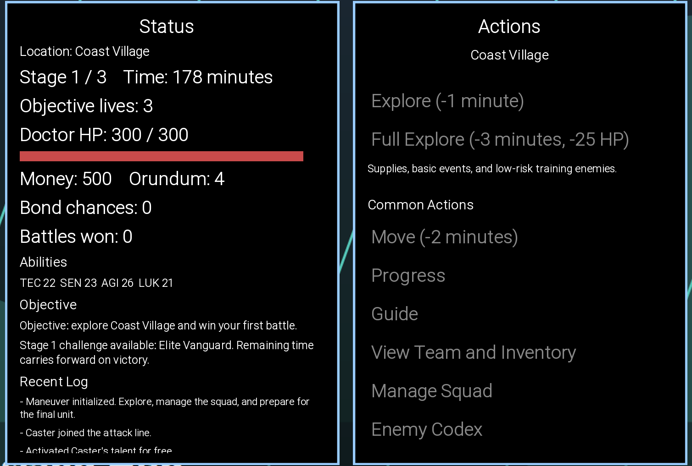
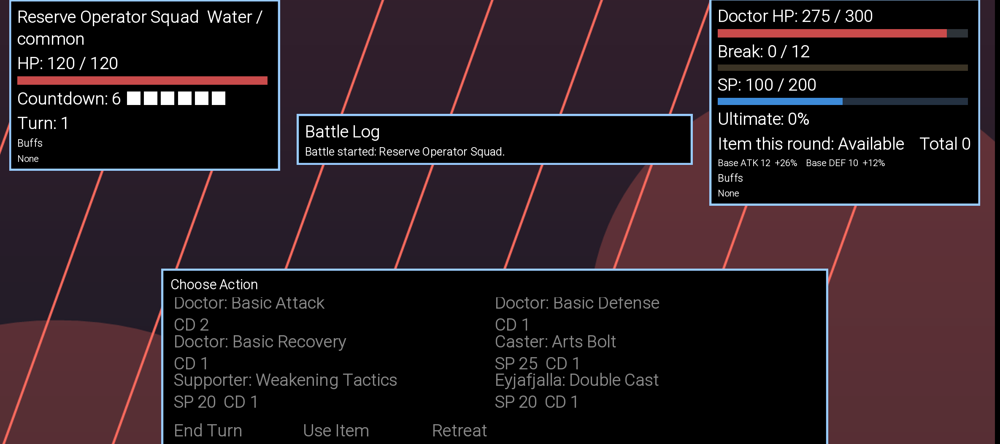
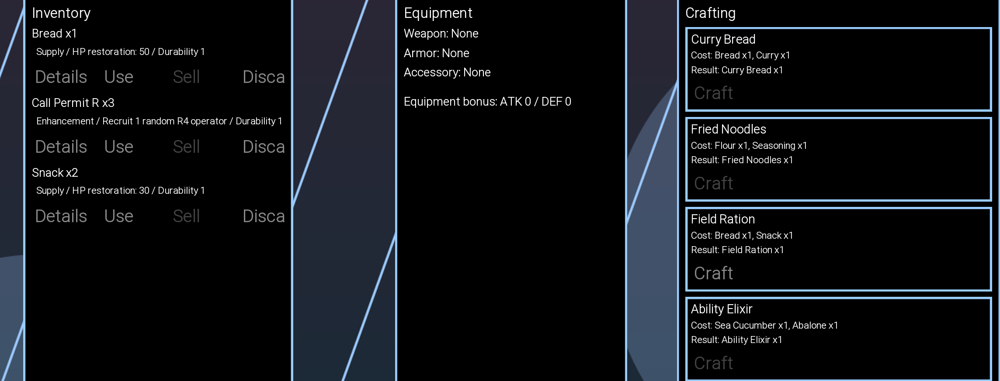
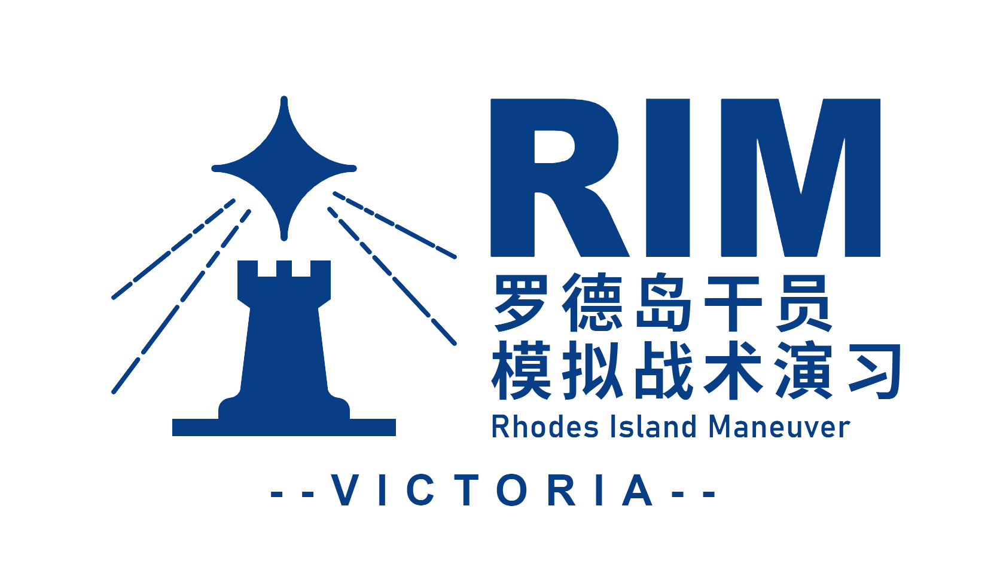

RIM // PROJECT TERMINAL
干员们的现代演习，
正在开发中。
这里集中呈现 RIM 的作品准则、教程序章、开发日志与联系渠道。右侧轮播展示当前实验版本的探索、战斗与物资界面。
RIM / MAIN TERMINAL
// 站点导航
从这里进入 RIM
四个页面分别承载作品介绍、教学剧情、开发记录和联系渠道。选择一个入口，继续查阅完整内容。
01TEN COVENANTS
INFO
关于 RIM
RIM是什么？RIM会怎么样？
这里用十条盟约说明作品的方向与准则。
STORY
开场教学剧情
RIM的教程是互动式的，因为教程暂未于游戏内实装，这里以pdf形式刊载序章内容，敬请阅读
ENTER ARCHIVE ↗ 03DEV DIARY / 2025—2026LOGS
开发日志
这里记录了RIM的开发过程与随想。
持续更新中，欢迎浏览。
CONTACT
联系我们
如果您想参与测试或有任何留言，欢迎通过邮件联系我们。
ENTER ARCHIVE ↗